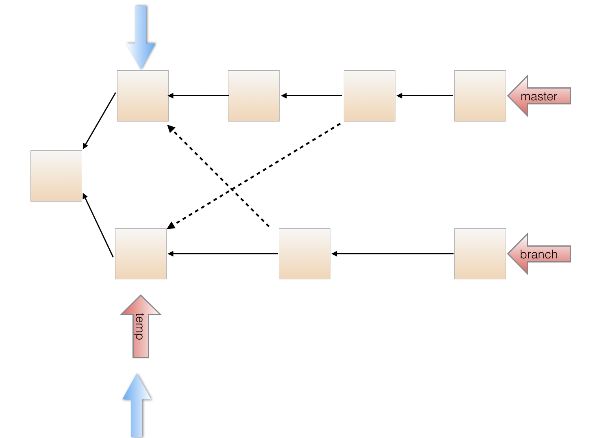

Project
PintOS
•
Collaborated with a team of four to develop and deploy a robust, multi-threaded operating system using C language as the primary project for the OS course CS162 at UC Berkeley.
•
Designed and implemented OS functions including but not limited to process control and file operation syscalls, priority scheduling, synchronization through locks and semaphores, buffer cache, and extensible file system.
•
From design documentation to function implementation, meticulous self-testing, and eventual deployment of the operating system on a virtual machine, a flawless 100% pass rate was achieved across all tests.
Gitlet

•
Developed a local and remote modified version of the common version control system Git in Java as the final project for the data structure course CS61B at UC Berkeley.
•
Realized common Git commands including but not limited to add, commit, push, pull, checkout, branch, and merge.
•
Capable of handling multiple file additions and removals with constant run time efficiency.
Shadow Warriors

•
Developed an FPS game through Unity as a project member of Toppa @ Berkeley, mainly responsible for the game's UI and player's movement and interaction with the environment.
•
Designed and implemented the game's UI, including dashboard, sight bead, score indicator, and health bar.
•
Realized the player's movement and interaction with the environment, including but not limited to player's walking, jumping, crouching, and shooting and enemy's spawning and attacking.
Geopogo Creator CAD
•
Interned as a software engineer at a leading 3D and AR (Augmented Reality) technology startup named Geopogo (926+ users).
•
Rebuilt two features (placing walls, floors, and roofs and transformation tools) in one of Geopogo application programs Creator CAD using Unity.
•
Created a library of various building materials based on different categories such as color and size, redeveloped the UI regarding transformation, rotation and scaling and fixed the way users select models.